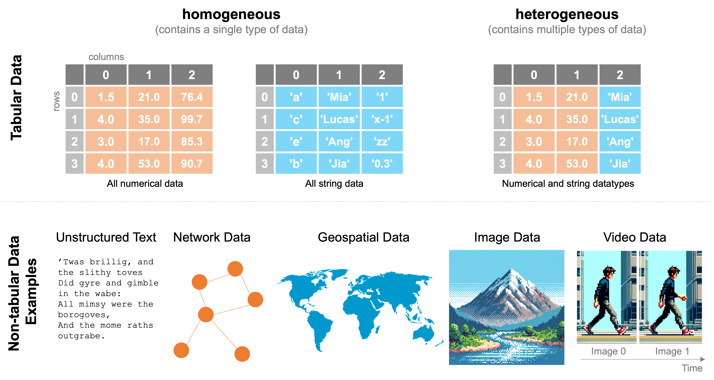
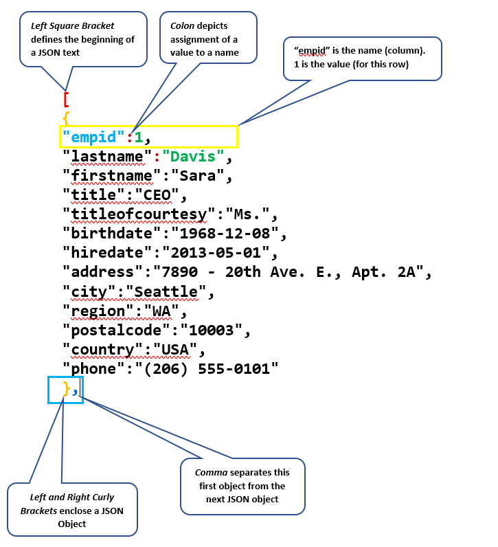

Menemukan dan Memanfaatkan Data Terbuka
Literasi Data dan Penulisan Ilmiah
2026-08-28
Outline
- Find & Get: dua tahap Data Pipeline yang dibahas minggu ini
- Sumber-sumber data terbuka untuk riset psikologi
- Ragam format data (
.csv,.sav,json) dan cara membacanya - Mengekstraksi data dari dokumen dan tabel dari file statis
- Etika pengumpulan dan penggunaan data, termasuk UU Perlindungan Data Pribadi
- 2️⃣ aktivitas (mandiri & kelompok)
Find & Get: Mencari dan Memperoleh Data 🔎
Mengingat kembali Data Pipeline
Minggu lalu Anda belajar mempresentasikan data dengan tabel. Mulai minggu ini, kita fokus pada tahapan Data Pipeline: Find (menemukan) dan Get (memperoleh) data.
Sebelum ada yang bisa ditata atau dibersihkan, harus ada data dulu di tangan Anda.
Kalau Anda benar-benar mencoba mencari dataset psikologi yang relevan dengan topik riset Anda, Anda akan menyadari betapa terbatasnya pilihan data terbuka untuk bidang psikologi kalau dibandingkan, misalnya, dengan ekonomi atau kesehatan masyarakat.
3️⃣ pertanyaan sebelum mencari data
- Di mana datanya berada?
- Dalam format apa data itu tersimpan?
- Apakah data itu perlu diolah dulu sebelum bisa dipakai?
Di mana data bisa ditemukan?
- Portal data terbuka — antarmuka web yang dirancang khusus untuk berbagi dataset yang bisa dipakai ulang (mis. Open-Source Psychometrics Project, Open Science Framework/OSF).
- Sistem digital organisasi — banyak lembaga riset/universitas menyimpan data, tapi hanya sebagian yang dirilis ke publik.
- Application Programming Interface (API) — cara terprogram untuk “menarik” data dari sistem tertentu; berguna kalau Anda butuh data dalam jumlah besar atau update berkala.
- Bebas di halaman web — data yang hanya ditampilkan sebagai tabel
HTML, belum dikemas jadi berkas yang siap diunduh.
Sumber data terbuka untuk psikologi
Open-Source Psychometrics Project
openpsychometrics.org/_rawdata/
- Puluhan dataset hasil pengisian skala psikologi daring
- Sudah diperkenalkan sebagai sumber dataset Big Five sejak Pertemuan 1
Daftar dataset psikologi/ilmu sosial
Psychological Stimulus Sets and Datasets (Brick, 2020)
Dokumen kolaboratif komunitas yang mengumpulkan berbagai sumber dataset terbuka di bidang psikologi dan ilmu sosial yang bisa menjadi pilihan untuk mengerjakan tugas UTS Anda.
Sumber lain yang layak dijelajahi
Open Science Framework (OSF), repositori data milik jurnal (banyak jurnal psikologi kini mewajibkan penulis membagikan data mentah), dan arsip data milik konsorsium riset (mis. World Values Survey, Wellcome Global Monitor untuk data lintas-negara).
🧩 Aktivitas mandiri: menjelajahi sumber data
Kerjakan sendiri (10 menit)
Buka salah satu sumber data terbuka yang baru saja dibahas (Open-Source Psychometrics Project atau daftar dataset komunitas).
- Pilih satu dataset yang menarik minat Anda. Idealnya yang relevan dengan topik riset yang Anda minati.
- Catat: nama dataset, jumlah kira-kira variabel/kolom, dan format berkasnya.
- Tuliskan satu pertanyaan riset yang mungkin bisa dijawab dengan dataset tersebut.
Format Data dan Cara Membacanya 📂
Tipe Data

Ragam format data
.csv/.tsv(comma/tab-separated values) — teks polos yang menyimpan tabel; ringan, terbuka, dan bisa dibaca hampir semua perangkat lunak..xls/.xlsx— format spreadsheet Excel; menyimpan tabel plus format visual dan formula, sehingga ukurannya lebih besar dari CSV..sav— format native SPSS, paling umum Anda temui di penelitian psikologi; menyimpan data plus label variabel dan value labels (mis.1 = Laki-laki,2 = Perempuan)..json— format ringan berbasis struktur tree (bukan tabel), umum dipakai untuk data dari API atau media sosial.
Tabel (.csv/.xlsx) vs. tree (.json): Apa perbedaannya?
Struktur tabular
- Anda langsung tahu berapa kolom yang dibutuhkan.
- Cocok kalau semua data “pas” masuk ke kolom yang sama untuk setiap baris.
- Ini adalah struktur yang kita pakai sepanjang mata kuliah ini.
Struktur tree (JSON)
- Setiap “titik” (node) bisa punya jumlah nilai yang berbeda-beda.
- Cocok untuk data yang jumlah elemennya tidak tetap — mis. daftar komentar pada satu unggahan media sosial, yang jumlahnya beda-beda tiap unggahan.
Note
Untuk sebagian besar data riset psikologi (respons survei, skor tes), struktur tabular sudah cukup. .json lebih relevan kalau Anda bekerja dengan data media sosial atau hasil ekstraksi dari API.
Format json

Membaca .sav tanpa SPSS
- Anda tidak selalu perlu lisensi
SPSSuntuk membaca.savkarenajamovidanJASP(keduanya gratis) bisa membukanya langsung. - Spreadsheet (Google Sheets/Excel) tidak bisa membuka
.savsecara langsung — perlu dikonversi dulu ke.csv/.xlsxlewatjamovi/JASP. - Perhatikan value labels: kolom yang terlihat berisi angka (
1,2) sering kali punya label tersembunyi (Laki-laki,Perempuan) yang perlu Anda periksa di variable view, bukan hanya data view.
Mengekstraksi Data dari Dokumen dan Tabel 📄
Kapan Anda butuh ekstraksi
Tidak semua data terbuka tersedia dalam format siap pakai. Kadang Anda hanya menemukan data dalam:
PDFdigital — teksnya bisa disorot/disalin, tapi tabelnya sering berantakan kalau disalin langsung ke spreadsheet.PDFhasil pindai (scanned) — sebenarnya berupa gambar, kontennya tidak bisa disalin sama sekali tanpa bantuan tambahan.- Halaman web (
HTML) — data tampil sebagai tabel di browser, tapi belum ada tombol “unduh.”
Strategi ekstraksi sesuai formatnya
| Sumber | Strategi |
|---|---|
| PDF digital dengan tabel rapi | Salin manual (tabel pendek), atau software ekstraksi tabel khusus (mis. Tabula) untuk tabel panjang/berulang |
| PDF hasil pindai (scan) | Perlu Optical Character Recognition (OCR) — perangkat lunak yang “membaca” gambar menjadi teks, meski hasilnya sering perlu dikoreksi manual |
| Tabel di halaman web | Fungsi IMPORTHTML() di Google Sheets bisa langsung menarik tabel/daftar dari sebuah URL ke spreadsheet Anda. Contoh klik di sini. |
Ekstraksi otomatis tidak pernah 100% sempurna
Selalu verifikasi hasil ekstraksi terhadap sumber aslinya, karena ada kemungkinan baris yang terlewat atau kolom yang tergeser adalah kesalahan umum. Inilah kenapa tahap Verify (Pertemuan 4) dilakukan setelah Get.
Etika Pengumpulan dan Penggunaan Data 🔐
Kenapa etika data penting bagi peneliti
- Bahkan ketika Anda tidak mengumpulkan data sendiri, hanya mengunduh dataset terbuka, Anda tetap memikul tanggung jawab etis atas bagaimana data itu digunakan.
- Di Indonesia, kerangka hukumnya diatur dalam Undang-Undang Nomor 27 Tahun 2022 tentang Pelindungan Data Pribadi (UU PDP).
UU PDP: definisi penting
Pasal 1
- Data Pribadi — data tentang orang perseorangan yang teridentifikasi atau dapat diidentifikasi, baik sendiri maupun dikombinasikan dengan informasi lain.
- Subjek Data Pribadi — orang perseorangan yang datanya melekat/terkait dengannya (mis. partisipan riset Anda).
- Pengendali Data Pribadi — pihak yang menentukan tujuan dan melakukan kendali atas pemrosesan data (bisa jadi ini Anda, sebagai peneliti).
Hak subjek data pribadi (ringkasan)
- Mendapatkan informasi tentang tujuan dan dasar penggunaan datanya
- Memperbaiki data yang salah/tidak akurat
- Mendapatkan akses dan salinan datanya
- Menghapus atau mengakhiri pemrosesan datanya
- Menarik kembali persetujuan yang telah diberikan
Note
Kalau Anda pernah bertanya-tanya kenapa formulir informed consent riset psikologi selalu menyebutkan hak partisipan untuk mengundurkan diri kapan saja — inilah dasar hukumnya.
Dasar pemrosesan data: persetujuan (Pasal 20–22)
- Pengendali Data Pribadi wajib punya dasar hukum sebelum memproses data — salah satunya adalah persetujuan eksplisit dari subjek data.
- Persetujuan harus disampaikan tertulis atau terekam, dan pemroses wajib menjelaskan: legalitas pemrosesan, tujuannya, jenis data yang diproses, jangka waktu penyimpanan, dan hak subjek data.
- Inilah dasar hukum di balik formulir informed consent yang Anda tanda tangani (atau minta ditandatangani partisipan) sebelum penelitian dimulai.
Pengecualian untuk kepentingan penelitian ilmiah
Pasal 15 ayat (1)
Sejumlah hak subjek data, termasuk hak menghapus data dan menarik persetujuan, dikecualikan untuk beberapa kepentingan, salah satunya: “kepentingan statistik dan penelitian ilmiah.”
Pengecualian ini bukan berarti peneliti leluasa menggunakan data milik partisipan. Ia memberi ruang kerja bagi peneliti (mis. memakai data lama untuk analisis sekunder tanpa perlu melacak ulang persetujuan tiap partisipan), tapi tanggung jawab menjaga kerahasiaan dan penggunaan yang wajar tetap ada di tangan peneliti.
Menerapkan ini ke dataset contoh
Dataset Big Five yang kita pakai bersifat terbuka dan sudah dianonimkan, tidak ada nama, tidak ada informasi yang bisa melacak balik ke individu tertentu. Tapi prinsip etikanya tetap relevan untuk proyek riset Anda sendiri:
- Kalau Anda mengumpulkan data sendiri (mis. untuk tesis), formulir informed consent dan penyimpanan data yang aman adalah kewajiban Anda sebagai peneliti.
- Kalau Anda memakai data sekunder terbuka, tetap periksa: apakah dataset tersebut benar-benar sudah dianonimkan? Apakah ada batasan penggunaan dari penyedia data (lisensi, atribusi)?
🧩 Diskusi kelompok: skenario etika data
Diskusikan bersama kelompok Anda (10 menit)
Coba cek kembali dataset yang Anda kumpulkan dari riset skripsi Anda. Informasi apa saja yang Anda kumpulkan dalam dataset tersebut.
- Apakah dataset ini “cukup” anonim untuk dipakai bebas? Mengapa/mengapa tidak?
- Langkah apa yang bisa Anda ambil sebelum menggunakannya dalam naskah publikasi?
- Kaitkan diskusi ini dengan hak-hak subjek data yang baru kita bahas.
Penutup
Kesimpulan Pertemuan 3
- Sebelum data bisa ditata atau dibersihkan, ia harus ditemukan dan diperoleh dulu dan ini yang menjadi fokus Data Pipeline minggu ini.
- Sumber data psikologi terbuka: Open-Source Psychometrics Project dan daftar dataset komunitas.
- Format data yang umum:
.csv,.xlsx,.sav(format native SPSS), dan.json(struktur tree, bukan tabel). - Ekstraksi data dari PDF/HTML selalu perlu diverifikasi ulang.
- UU PDP memberi kerangka hukum bagi hak subjek data dan dasar persetujuan dengan pengecualian untuk kepentingan penelitian ilmiah, yang tetap menuntut tanggung jawab etis dari peneliti.
Referensi
- Psychological Stimulus Sets and Datasets (Brick, 2020). https://docs.google.com/spreadsheets/d/1ejOJTNTL5ApCuGTUciV0REEEAqvhI2Rd2FCoj7afops/edit
- Open Knowledge Foundation & International Republican Institute. (2021). Data literacy curriculum.
- Open-Source Psychometrics Project. (n.d.). Raw data repository. https://openpsychometrics.org/_rawdata/
- Republik Indonesia. (2022). Undang-Undang Nomor 27 Tahun 2022 tentang Pelindungan Data Pribadi.
Ada pertanyaan❓

Catatan
- Paparan disusun dengan menggunakan dan Quarto dengan template dari UNAIR Theme.
- Kontak saya via amelia.zein@psikologi.unair.ac.id